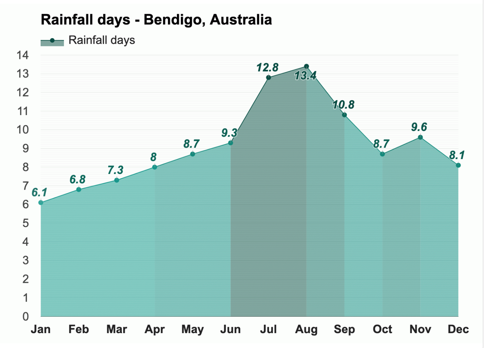

Temperature 
With an average high-temperature of 30.4°C (86.7°F) and an average
low-temperature of 15.7°C (60.3°F), January is the warmest month.
With an average high-temperature of 12.1°C (53.8°F) and an average
low-temperature of 4.3°C (39.7°F), July is the coldest month in
Bendigo.
With an average of 10.3h of sunshine, December has the most sunshine
of the year. With an average of 6.5h of sunshine, July has the least
sunshine of the year in Bendigo.
Rain
In Bendigo, Australia, during the entire year, the rain falls for
109.6 days and collects up to 323mm (12.72") of precipitation.

The most humid month in Bendigo is July, with an average relative
humidity of 85%. August is the month with the most rainfall. Rain
falls for 13.4 days and accumulates 35mm (1.38") of precipitation.
The least humid month in Bendigo, Australia, is January, with an
average relative humidity of 48%. March is the month with the least
rainfall. Rain falls for 7.3 days and accumulates 22mm (0.87") of
precipitation.
Wind
Snow
The only month with snowfall is August, when snow falls for 0.1 days
and typically aggregates up to 1mm (0.04") of snow.
* The above information is sourced from Weather-At. Take a
visit for
more information...
Population 121,221 (City)
Median Age 42
Ancestry
The most common ancestries in Bendigo were English 30.6%,
Australian 30.1%, Irish 10.3%, Scottish 8.4% and German 3.3%.
Country of birth
82.8% of people were born in Australia. The most common countries
of birth were England 2.3%, New Zealand 0.8%, India 0.5%,
Philippines 0.4% and Scotland 0.3%.
Religion
In Bendigo, Christianity was the largest religious group reported
overall (55.4%).
The most common responses for religion in Bendigo were No
Religion, so described 37.1%, Catholic 20.6%, Anglican 12.9%, Not
stated 10.7% and Uniting Church 6.5%.
* The above information is sourced from
Australian Bureau of Statitics. Take a visit for
more information...
Skate and BMX
Over the last 20 years there has been a significant growth in the
interest and participation of action sports such as skateboarding
and BMX.
Albury Skate Park
Thurgoona Skate Park
Springdale Heights Pump Track
Boat ramps
There are five boat ramps in the Albury region, with access to
either the Murray River or Lake Hume. All ramps offer easy access to
the water as well as nearby services.
Lake Hume Village Boat Ramp
Kremur Street
Mungabareena Reserve
Walking and cycling trails
Albury has more than 50 kilometres of interlinked on and off-road
trails, offering walkers and cyclists of all ages, safe and
enjoyable access to our natural environment and places of interest.
Heritage Walk
Nail Can Hill / Ridge Trail
Bungambrawatha Creek Trail
Rainforest Walk
* The above information is sourced from
Albury City Government. Take a visit for
more information...